开始使用主题
项目仓库
-

material-mkdocs-theme
一款适用于 Material-Mkdocs 的极简风格主题。 查看项目
下载主题
首先，创建一个新的 MkDocs 项目，或者使用现有的 MkDocs 项目。目录结构如下所示：
├─docs
│ └─...
└─site
在项目目录下，选择一个合适的文件夹来存放主题文件，例如 theme 文件夹。然后，将主题文件下载解压到该文件夹中。
├─docs
│ ├─...
│ └─theme
│ ├─css
│ └─js
└─site
或者，在指定目录下，使用以下命令直接克隆主题文件：
如果想要持续接收主题更新，推荐使用下面的命令：
配置主题
在 mkdocs.yml 文件中，添加以下配置：
其中，scheme 必须设置为 auto 确保主题支持深色模式。
注意
主题使用了 @media 媒体查询来实现深色模式的切换，因此在某些浏览器中可能会出现深色模式不生效的问题。
完成配置后，运行以下命令启动 MkDocs 服务器：
如果配置无误，可以看到主题已经成功应用。
声明
注意
使用该主题会导致底部的版权信息和社交链接不显示。
如需取消隐藏，请注释掉.\css\custom\foot\import.css 文件中的代码。